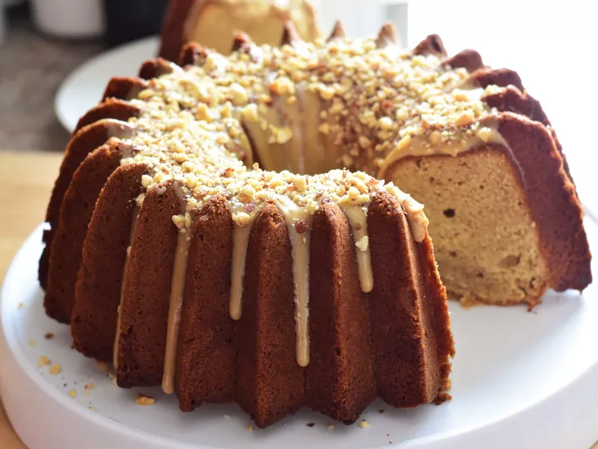

Peanut Butter Pound Cake

A cake that takes the..... well you know...
Description
This peanut butter pound cake will fill your belly, and your hearts
this holiday season. This cake pairs very well with a cold glass of milk!
Be careful not to burn yourself with ovens...
Ingredients
- 2 cups white sugar
- 1 ¼ cups butter, softened
- 6 eggs
- 1 teaspoon vanilla extract
- ½ cup creamy peanut butter
- 2 cups all-purpose flour
- 1 teaspoon baking powder
- ¼ teaspoon salt
- ⅓ cup finely chopped peanuts (Optional)
Steps
- Preheat oven to 350 degrees F (175 degrees C). Grease and flour a
10-inch tube pan; line with parchment paper.
- Combine sugar and butter in a large bowl; beat with an electric
mixer until light and creamy. Beat in eggs one at a time,
beating well after each addition. Add vanilla extract.
Beat in peanut butter slowly.
- Sift flour, baking powder, and salt together in a bowl. Mix into
the butter mixture, a little at a time, until batter is well blended.
Pour batter into the prepared tube pan.
- Bake in the preheated oven until golden, about 45 minutes.
Sprinkle peanuts on top. Reduce oven temperature to 325 degrees F
(165 degrees C). Continue baking until a toothpick inserted into the
center comes out clean, 15 to 20 minutes more.
- Cool cake in the pan for 10 minutes. Invert onto a wire rack and let
cool completely.
Back to Home